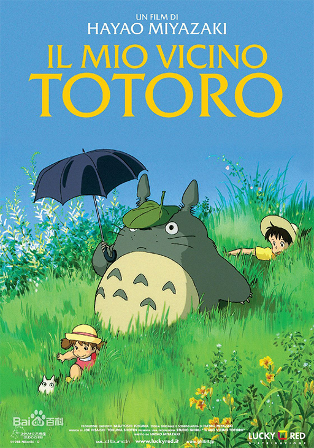

因为妈妈生病在乡下静养，暑假期间，小月和小梅姐妹俩跟随爸
爸到乡下看望妈妈。有一天小梅独自在院子玩耍寻找橡树子的时候，意外的看到了憨憨的小龙猫。小龙猫想甩掉小梅，却把小梅引到了正在睡觉
的大大的龙猫身边，这让小月和小梅姐妹兴奋不已。有一天下雨的傍晚，小月姐妹等在爸爸下班回来的车站旁时，大龙猫出现了，小月借给它一
把伞，却被它当作非常有趣的玩具。龙猫把橡果子送给了小月和小梅，这令小月小梅非常开心。小月她们还看见了龙猫它们乘坐的猫巴士车。
夏天快过去的时候，小月和小梅收到医院的电报，妈妈身体不舒服，姐妹俩非常的担心
妈妈的情况。小梅抱怨姐姐不管自己，姐姐怪小梅不懂事，小梅大哭着喊着姐姐是个笨蛋跑远了。小月慌忙四处寻找小梅。
天色将晚，小月想到向龙猫求助，龙猫帮小月唤来了猫巴士车，终于找到了迷路的小梅。
之后，猫巴士车又带着姐妹俩来到了妈妈的病房窗前。远远的看到一切平安的妈妈，姐妹俩不知道有多么快乐。小梅慌忙把迷路时摘的玉米送给
了妈妈，希望她早日康复。
